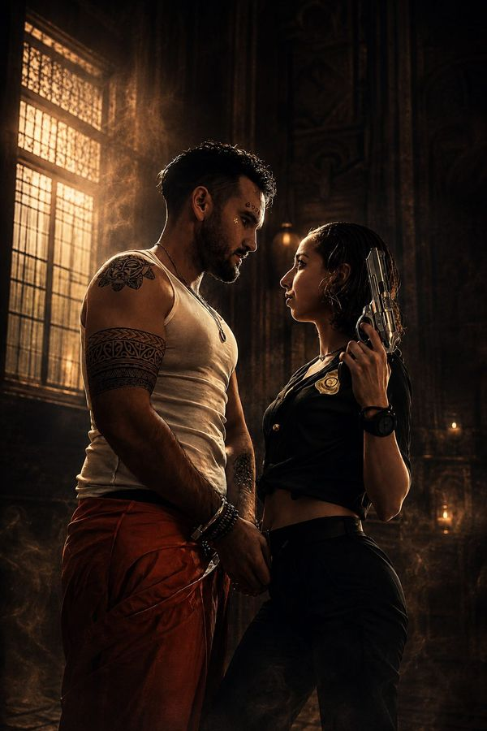
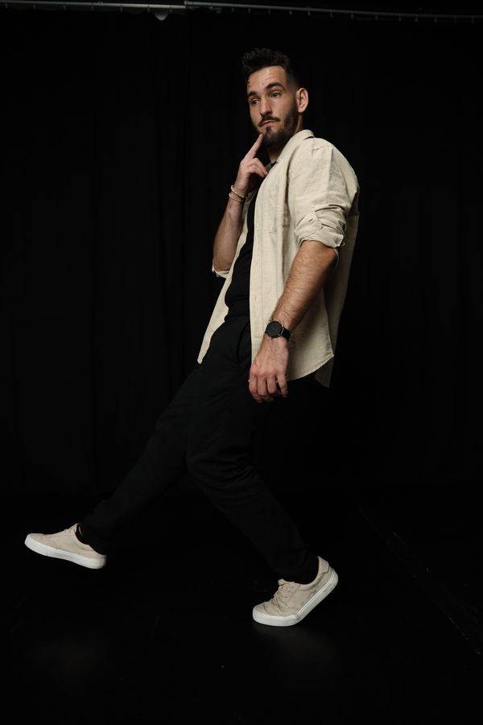

01 — Noir
Dark editorialBlack, ivory and a Bodoni headline. Studio film in the hero, a pinned horizontal book, and a close-up and the film that both open to full screen as you scroll.
02 — Atelier
Light, SwissWarm bone paper, a 12-column grid and an oversized name. It opens with a contact-sheet flicker, then an index where hovering a row brings up a photo that follows your cursor.


03 — Cinema
Film / viewfinderA camera viewfinder HUD with REC and timecode. Letterbox bars open over the studio video, the photos stack like scenes in three acts, and measurements roll as end credits.